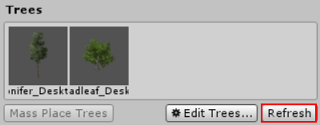
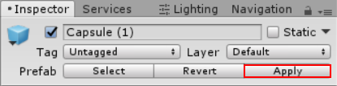

Trees
To enhance Unity Terrains, you can paint Trees onto a Terrain in much the same way as painting height maps and textures. However, Trees are solid 3D GameObjects that grow from the surface. Unity uses optimisations, like billboarding for distant Trees, to maintain good renderingThe process of drawing graphics to the screen (or to a render texture). By default, the main camera in Unity renders its view to the screen. More info
See in Glossary performance. This means that you can have dense forests with thousands of trees and still keep an acceptable frame rate.
Painting Trees
The Tree button on the toolbarA row of buttons and basic controls at the top of the Unity Editor that allows you to interact with the Editor in various ways (e.g. scaling, translation). More info
See in Glossary enables Tree painting:
Initially, the Terrain will have no Trees available. In order to start painting onto the Terrain, you need to add a Tree. Click the Edit Trees button and select Add Tree. From here, you can select a Tree assetAny media or data that can be used in your game or project. An asset may come from a file created outside of Unity, such as a 3D model, an audio file or an image. You can also create some asset types in Unity, such as an Animator Controller, an Audio Mixer or a Render Texture. More info
See in Glossary from your Project and add it as a Tree Prefab for use with the brush:
To help prototyping, Unity provides several sample SpeedTree Tree GameObjects in the Standard AssetsA collection of useful assets supplied with Unity. Unity ships with multiple Standard Asset such as 2D, Cameras, Characters, CrossPlatformInput, Effects, Environment, ParticleSystems, Prototyping, Utility, and Vehicles. More info
See in Glossary package. Alternatively, you can create your own Trees.
If the Tree GameObject that you are importing supports Bend Factor , the Add Tree window shows a Bend Factor property for adjusting wind responsiveness. Trees created using the SpeedTree Modeller have a Bend Factor. See the section on Making Trees bend in the wind below.
When you have set up your Tree properties (described below), you can paint Trees onto the Terrain in the same way you paint textures or heightmaps. You can remove Trees from an area by holding the shift key while you paint, or remove just the currently selected Tree type by holding down the control key.
Tree properties
After you have selected which Tree to place, adjust its settings to customise Tree placement and characteristics:

| Property: | Function: |
|---|---|
| Mass Place Trees | Create an overall covering of Trees without painting over the whole landscape. After mass placement, you can still use painting to add or remove Trees to create denser or sparser areas. |
| Brush Size | Controls the size of the area that you can add Trees to. |
| Tree Density | Tree Density controls the average number of Trees painted onto the area defined by Brush Size. |
| Tree Height | Control the Tree’s minimal height and maximal height using a slider. Drag the slider to the left for short Trees, and right for tall Trees. If you uncheck Random, you can specify the exact scale for the height of all newly painted Trees within the range of 0.01 to 2. |
| Lock Width to Height | By default, a Tree’s width is locked to its height so that Trees are always scaled uniformly. However, you can disable the Lock Width to Height option and specify the width separately. |
| Tree Width | If the Tree’s width is not locked to its height you can control the Tree’s minimal width and maximal width using a slider. Drag the slider to the left for thin Trees, and right for wide Trees. If you uncheck Random, you can specify the exact scale for the width of all newly painted Trees within the range of 0.01 to 2. |
| Random Tree Rotation | Random Tree Rotation is a variation option used to help create the impression of a random, natural-looking forest rather than an artificial plantation of identical Trees. Untick this if you want to place Trees with fixed, identical rotations. |
| Lighting | |
| Lightmap Static | Enable this check box to indicate to Unity that the GameObject’s location is fixed and it will participate in Global Illumination computations. If a GameObject is not marked as LightmapA pre-rendered texture that contains the effects of light sources on static objects in the scene. Lightmaps are overlaid on top of scene geometry to create the effect of lighting. More info See in Glossary Static then it can still be lit using Light ProbesLight probes store information about how light passes through space in your scene. A collection of light probes arranged within a given space can improve lighting on moving objects and static LOD scenery within that space. More info See in Glossary. |
| Scale In Lightmap | Specifies the relative size of the GameObject’ UVs within a lightmap. A value of 0 will result in Unity not lightmapping the GameObject, but the GameObject will still contribute to the lighting of other GameObjects in the SceneA Scene contains the environments and menus of your game. Think of each unique Scene file as a unique level. In each Scene, you place your environments, obstacles, and decorations, essentially designing and building your game in pieces. More info See in Glossary. A value greater than 1.0 increases the number of pixelsThe smallest unit in a computer image. Pixel size depends on your screen resolution. Pixel lighting is calculated at every screen pixel. More info See in Glossary in the lightmap used for this GameObject. A value less than 1.0 decreases the number of pixels. You can use this property to optimise lightmaps so that important or detailed areas are more accurately lit. For example, an isolated building with flat, dark walls will use a low lightmap scale (less than 1.0), while a collection of colorful motorcycles displayed close together need a high scale value. |
| Lightmap Parameters | Allows you to choose or create a set of Lightmap Parameters for this GameObject. |
Creating Trees
If you want to create your own Trees, you can use the SpeedTree Modeler, Unity’s Tree Creator tool, or any 3D modelling application, and then import them into your Project.
You can use SpeedTree Modeler (from IDV, Inc.) to create Trees with advanced visual effects such as smooth LODA system for building multiplayer capabilities for Unity games. It is built on top of the lower level transport real-time communication layer, and handles many of the common tasks that are required for multiplayer games. More info
See in Glossary transition, fast billboarding and natural wind animation. For more detailed information, refer to the SpeedTree Modeler documentation. You can also import SpeedTree assets into your Project folder from Asset StoreA growing library of free and commercial assets created by Unity and members of the community. Offers a wide variety of assets, from textures, models and animations to whole project examples, tutorials and Editor extensions. More info
See in Glossary packages or other third party sources.
Unity has its own Tree creator that you can use to produce new Tree assets. You can also use a 3D modelling application.
When creating Trees, position the anchor point at the base of the Tree where it emerges from the ground. For performance reasons, your Tree meshThe main graphics primitive of Unity. Meshes make up a large part of your 3D worlds. Unity supports triangulated or Quadrangulated polygon meshes. Nurbs, Nurms, Subdiv surfaces must be converted to polygons. More info
See in Glossary should have fewer than 2000 triangles. and The mesh always has exactly two materials: one for the Tree body and the other for the leaves.
Trees must use the Nature/Soft Occlusion Leaves and Nature/Soft Occlusion Bark shaderA small script that contains the mathematical calculations and algorithms for calculating the Color of each pixel rendered, based on the lighting input and the Material configuration. More info
See in Glossary. To use those shaders, you have to place Trees in a specific folder named Ambient-Occlusion, or the Trees won’t render correctly. When you place a model in such a folder and reimport it, Unity will calculate soft ambient occlusionA method to approximate how much ambient lighting (lighting not coming from a specific direction) can hit a point on a surface. More info
See in Glossary in a way that is specifically designed for Trees.
If you change an imported Tree asset in a 3D modelling application, you will need to click the Refresh button in the Editor in order to see the updated Trees on your Terrain: 
Warning When importing and altering a SpeedTree model in a 3D modeling program, when you re-export it (as an .fbx or .obj) you may lose the natural wind animation functionality that comes with SpeedTree models.
Using Colliders with Trees
You can add a Capsule Collider to a new Tree asset by instantiating the Tree in the scene by dragging the Prefab from your Assets folder into the Scene. Then add the collider using menu: ComponentA functional part of a GameObject. A GameObject can contain any number of components. Unity has many built-in components, and you can create your own by writing scripts that inherit from MonoBehaviour. More info
See in Glossary > Physics > Capsule ColliderA capsule-shaped collider component that handles collisions for GameObjects like barrels and character limbs. More info
See in Glossary. You can then either:
Override the original prefabAn asset type that allows you to store a GameObject complete with components and properties. The prefab acts as a template from which you can create new object instances in the scene. More info
See in Glossary by clicking the Apply button on the Tree GameObject in the Inspector Window: Or, create a new Prefab by dragging the Tree GameObject into your Assets folder.
When you add the Tree to the Terrain for painting, make sure that if you have created a new Prefab that you select the correct one with with the colliderAn invisible shape that is used to handle physical collisions for an object. A collider doesn’t need to be exactly the same shape as the object’s mesh - a rough approximation is often more efficient and indistinguishable in gameplay. More info
See in Glossary rather than the original GameObject. You must also enable Create Tree Colliders in the Terrain’s Terrain ColliderA terrain-shaped collider component that handles collisions for collision surface with the same shape as the Terrain object it is attached to. More info
See in Glossary component inspector if you want to make .
Making Trees bend in the wind
You first need to create a Wind ZoneA GameObject that adds the effect of wind to your terrain. For instance, Trees within a wind zone will bend in a realistic animated fashion and the wind itself will move in pulses to create natural patterns of movement among the tree. More info
See in Glossary to make Trees react to the wind. To do this select GameObjectThe fundamental object in Unity scenes, which can represent characters, props, scenery, cameras, waypoints, and more. A GameObject’s functionality is defined by the Components attached to it. More info
See in Glossary > 3D ObjectA 3D GameObject such as a cube, terrain or ragdoll. More info
See in Glossary > Wind Zone.
At this point, make sure that your Trees are set to bend. Select your TerrainThe landscape in your scene. A Terrain GameObject adds a large flat plane to your scene and you can use the Terrain’s Inspector window to create a detailed landscape. More info
See in Glossary, click the Place Trees button in the InspectorA Unity window that displays information about the currently selected GameObject, Asset or Project Settings, alowing you to inspect and edit the values. More info
See in Glossary, and then select Edit Trees > Edit Tree. Setting the Bend Factor to 1 will cause the Trees to adjust if you have not already done this.
With the default settings, your Trees will move quite violently. To fix this, change your bend value in each individual Tree type. This is useful if you want some Tree types to bend more than others. To change the bend effect in the entire Wind Zone, set the values in the Wind Zone component directly. To reduce the fluttering effect of the leaves, adjust the wind turbulence down to around 0.1 to 0.3, and everything will become much smoother. If you don’t want the Trees blowing all the way to one side and instead want some variation, set the Wind Main value down to the same value as your turbulence.
Tree Level of Detail (LOD) transition zone
Unity’s LOD system uses a 2D to 3D transition zone to blend 2D billboards with 3D tree models seamlessly. This prevents any sudden popping of 2D and 3D trees, which is vital in VR. For more information about configuring LOD components, see the (LOD)[LevelOfDetail] and (LOD Group)[class-LODGroup] manual pages.
2018–09–20 Page amended with editorial review
GameObject menu changed in Unity 4.6
2D to 3D transition zone added to LOD system in Unity 2017.3 NewIn20173
Did you find this page useful? Please give it a rating: